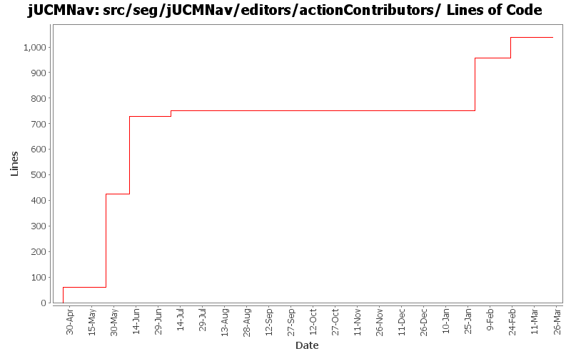

Summary Period: 2005-04-25 to 2006-03-23
[root]/src/seg/jUCMNav/editors/actionContributors

Total Lines Of Code:
1037 (2006-03-31 18:01)
| Author | Changes | Lines of Code | Lines per Change |
|---|---|---|---|
| Totals | 80 (100.0%) | 1037 (100.0%) | 12.9 |
| jkealey | 38 (47.5%) | 692 (66.7%) | 18.2 |
| jfroy | 22 (27.5%) | 286 (27.6%) | 13.0 |
| etremblay | 5 (6.3%) | 59 (5.7%) | 11.8 |
| jpdaigle | 11 (13.8%) | 0 (0.0%) | 0.0 |
| jmcmanus | 4 (5.0%) | 0 (0.0%) | 0.0 |
Created command test cases for GRL
Fixed bug when saving Evaluation and LinkRef
0 lines of code changed in:
bug found by gunter with hiding stub labels
0 lines of code changed in:
Externalize String
0 lines of code changed in:
Added URNlink dialog, actions and commands
0 lines of code changed in:
Added option to import URN element in the selected file. Added option to autolayout only imported diagrams.
0 lines of code changed in:
Name change for EvaluationScenario (now called Strategy)
81 lines of code changed in:
Added:
-Delete commands for scenario and evaluation
-Delete action for evaluation
Fixed:
-NullPointer exception with scenarioView (in property view)
-Adding new elements in model when in scenario view
-Contribution and decomposition refresh
-Dispose labels in IntentionalElementEditPart and LinkRefEditPart
0 lines of code changed in:
Evaluation scenario view added.
0 lines of code changed in:
Merge of GRL branch with the main trunk
205 lines of code changed in:
Extracted a bunch of strings, translated language files to French.
0 lines of code changed in:
Merge grl branch with the main trunk
Major modification of the metamodel (URN_08.mdl) (Added GRL metamodel, New interfaces that define common element in GRL and UCM, Modified UCM-Map package to implement the new interfaces (some associations and attributes have been refactored using the interfaces), Map is now called UCMmap (to resolve conflict with java.util.map in the implementation), Removed Path Graph)
Modification of the code that used the metamodel.
Started modification of jUCMNav to support GRL.
0 lines of code changed in:
bugs 372 - 378 - 380 - 379 - 273 - 375 - massive changes in deletion command infrastructure. mainly refactoring but also various functionality additions
also committing minor changes to the twiki plugin created by JFRoy and an ant script to generate javadoc on a windows machine.
0 lines of code changed in:
bug 359 - mode now affects all editors;
undiscovered regression bug - stub labels sometimes didn't move;
cleaned&commented (javadoc) seg.jUCMNav.editparts;
moved remaining stub code from PathNodeEditPart to StubEditPart;
moved remaiining condition code form LabelEditPart to ConditionEditPart
0 lines of code changed in:
changed an old org.eclipse.gef string
0 lines of code changed in:
added javadoc to seg.jUCMNav.editors.actionContributors
22 lines of code changed in:
bug 335: palette wording
bug 344: extracted more strings
0 lines of code changed in:
bug 340 - disconnect timeout path action.
0 lines of code changed in:
bug 337 - escape selects the selection tool. also fixed a bug with right-click that sometimes caused the app to enter a nullpointerexception loop.
0 lines of code changed in:
bug 191 - connects -> improvements in deletion. i think there remains a bug where you do something, then undo it, then select a timer and the app causes an error because the connect path isn't the 2nd input, its the 1st. unable to repro but asking for testing.
0 lines of code changed in:
bug 191 - connections; initial work implemented. a few bugs remain but are not critical; mostly delete issues concerning delete multinode which I want refactored anyways. todo: improve usability with drag & drop connections and element position
0 lines of code changed in:
(26 more)
Generated by StatCVS 0.2.4